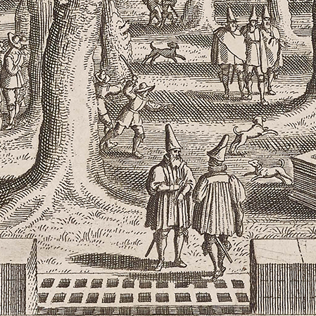
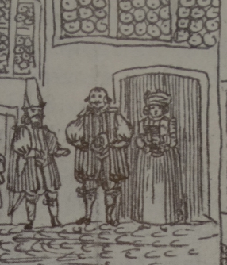
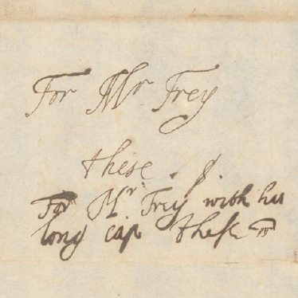

WITH HIS LONG CAP



The Basel scholar and Anglophile Johann Jacob Frey (1606–1636) was not enthusiastic when the University of his hometown offered him a professorship in Greek in 1634. He would much rather have continued to work in Britain, which he had loved ever after first arriving there in 1627. But after the marriage of his pupil Richard Boyle, Viscount Dungarvan, Frey ran out of excuses and returned to Basel in the summer of 1635 to take up his professorship. By November, he was himself married, to a 19-year-old recently widowed Catharina Bernoulli. Her father Sebastian Güntzer was one of the richest citizens of the city and a member of the "Safranzunft", the spice merchants' guild, from 1615. In his will, he decreed that a donation should be made to the officers of the guild every year on St Sebastian's day (20 January). From 1640, this was carried out in the form of an annual feast, the Fabian-Sebastian-Mähli, which continues to this day.
Another local tradition is immortalized in a charming amateur sketch made at the wedding of Johann Jacob and Catharina. Standing on the corner of Nadelberg and Heuberg in the historic centre of Basel, the couple are shown in the full formal gear of 17th-century Basel citizens. This included a round fur cap for the bride and for the groom one of the curious high hats which Basel was notorious for. In Matthäus Merian's engraving of leafy St Peter's Square, several gentlemen can be seen taking the air in slightly absurd headdress, which the English travel writer Thomas Coryat describes as "a strange kinde of hat, wherin they differ from all other Switzers that I saw in Helvetia" (Coryat's Crudities, 1607).
Frey probably found this pompously parochial outfit uncongenial; his own stylish Vandyke and loose hair are very different from the patriarchal beards and skullcaps of his superiors and colleagues at Basel University. In the wedding sketch, he is the only one among nine males to carry the hat in his hands rather than wear it. Was this a fleeting gesture of protest? One of the first letters from England which reached Frey after his return seems in fact to be mocking this kind of headgear. As address, young Viscount Dungarvan wrote "For Mr Frey with his long cap" and added a little doodle.
Its shape indicates that Dungarvan had forgotten the exact look of the "Baslerhüte" he saw in the summer weeks he had spent as Frey's guest two years before. What stayed with him was the incongruity of such an odd provincial costume on a cosmopolitan scholar who felt "a poor prisoner" in his Swiss hometown.
Regula Hohl Trillini